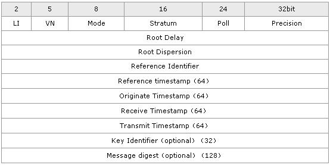
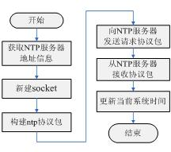

查看文章 |
原文转载自：http://www.eefocus.com/html/10-04
/94667s.shtml 10.4
实验内容 ――NTP协议实现
1．实验目的
通过实现NTP协议的练习，进一步掌握Linux网络编程，并且提高协议的分析与实现能力，为参与完成综合性项目打下良好的基础。
2．实验内容
Network Time Protocol（NTP）协议是用来使计算机时间同步化 的一种协议，它可以使计算机对其服务器或时钟源（如石英钟，GPS等）做同步化，它可以提供高精确度的时间校正（LAN上与标准时间差小于1毫秒，WAN上几十毫秒），且可用加密确认的 方式来防止协议攻击。 NTP提供准确时间，首先要有准确的时间来源，这一时间应该是国际标准时间UTC。
NTP获得UTC的时间来源可以是原子钟、天文台、卫星，也可以从Internet上获取。这样就有了准确而可靠的时间源。时间是按NTP服务器的等级传
播。按照距离外部UTC
源的远近将所有服务器归入不同的Stratun（层）中。Stratum-1在顶层，有外部UTC接入，而Stratum-2则从Stratum-1获取
时间，Stratum-3从Stratum-2获取时间，以此类推，但Stratum层的总数限制在15以内。所有这些服务器在逻辑上形成阶梯式的架构并
相互连接，而Stratum-1的时间服务器是整个系统的基础。
进行网络协议实现时最重要的是了解协议数据格式。NTP数据包有48个字节，其中NTP包头16字节，时间戳32个字节。其协议格式如图10.9所示。
 图10.9 NTP协议数据格式
其协议字段的含义如下所示。
LI：跳跃指
示器，警告在当月最后一天的最终时刻插入的迫近闺秒（闺秒）。
VN：版本
号。
Mode：工作模式。该字段包括以下值：0－预留；1－对称行为；3－客户
机；4－服务器；5－广播；6－NTP控制信息。NTP协议具有3种工作模式，分别为主/被动对称模式、客户/服务器模式、广播模式。在主/被动对称模式
中，有一对一的连接，双方均可同步对方或被对方同步，先发出申请建立连接的一方工作在主动模式下，另一方工作在被动模式下； 客户/服务器模
式与主/被动模式基本相同，惟一区别在于客户方可被服务器同步，但服务器不能被客户同步；在广播模式中，有一对多的连接，服务器不论客户工
作 在何种模式下，都会主动发出时间信息，客户根据此信息调整自己的时间。
Stratum：对本地时
钟级别的整体识别。
Poll：有符号整数表示
连续信息间的最大间隔。
Precision：有符
号整数表示本地时钟精确度。
Root Delay：表
示到达主参考源的一次往复的总延迟，它是有15～16位小数部分的符号定点小 数。
Root Dispersion：
表示一次到达主参考源的标准误差，它是有15～16位小数部分的无符号 定点小数。
Reference Identifier：
识别特殊参考源。
Originate Timestamp：
这是向服务器请求分离客户机的时间，采用64位时标格式。
Receive Timestamp：
这是向服务器请求到达客户机的时间，采用64位时标格式。
Transmit Timestamp：
这是向客户机答复分离服务器的时间，采用64位时标格式。
Authenticator（Optional）：
当实现了NTP认证模式时，主要标识符和信息数字域就 包括已定义的信息认证代码（MAC）信息。
由于NTP协议中涉及比较多的时间相关的操作，为了简化实现过程，在本实验中，仅要求实现NTP协议客户端部分的网络通信模块，也就是构造NTP协议字段
进行发送和接收，最后与时间相关的操作不需进行处理。NTP协议是作为OSI参考模型的高层协议比较适合采用UDP传输协议进行数据传输，专用端口号为
123。在实验中，以国家授时中心服务器（IP地址为 202.72.145.44）作为NTP（网络时间）服务器。
3．实验步骤
（1）画出流程图。
简易NTP客户端的实现流程如图10.10所示。
 图10.10 简易NTP客户端流程图
（2）编写程序。
具体代码如下：
/* ntp.c */
#include <sys/socket.h>
#include <sys/wait.h>
#include <stdio.h>
#include <stdlib.h>
#include <errno.h>
#include <string.h>
#include <sys/un.h>
#include <sys/time.h>
#include <sys/ioctl.h>
#include <unistd.h>
#include <netinet/in.h>
#include <string.h>
#include <netdb.h>
#define NTP_PORT
123
/*NTP专 用端口号字符串*/
#define TIME_PORT
37
/* TIME/UDP端 口号 */
#define NTP_SERVER_IP
"210.72.145.44" /*国家授时中心 IP*/
#define NTP_PORT_STR
"123" /*NTP专
用端口号字 符串*/
#define NTPV1
"NTP/V1" /*协议及其版本号*/
#define NTPV2
"NTP/V2"
#define NTPV3
"NTP/V3"
#define NTPV4
"NTP/V4"
#define TIME
"TIME/UDP"
#define NTP_PCK_LEN 48
#define LI 0
#define VN 3
#define MODE 3
#define STRATUM 0
#define POLL 4
#define PREC -6
#define JAN_1970 0x83aa7e80 /* 1900年～1970年之间的时间秒数 */
#define NTPFRAC(x) (4294 * (x) +
((1981 * (x)) >> 11))
#define USEC(x) (((x) >> 12) - 759 * ((((x) >> 10) + 32768) >> 16)) typedef struct _ntp_time
{
unsigned int coarse; unsigned int fine; } ntp_time;
struct ntp_packet
{
unsigned char leap_ver_mode; unsigned char startum; char poll; char precision; int root_delay;
int root_dispersion;
int reference_identifier; ntp_time reference_timestamp; ntp_time originage_timestamp; ntp_time receive_timestamp; ntp_time transmit_timestamp; };
char protocol[32];
/*构建NTP协议包*/
int construct_packet(char *packet)
{
char version = 1; long tmp_wrd; int port;
time_t timer;
strcpy(protocol, NTPV3);
/*判断协议版本*/
if(!strcmp(protocol, NTPV1)||!strcmp(protocol, NTPV2) ||!strcmp(protocol, NTPV3)||!strcmp(protocol, NTPV4)) {
memset(packet, 0, NTP_PCK_LEN);
port =
NTP_PORT;
/*设
置16字节的包头*/
version = protocol[6] - 0x30;
tmp_wrd = htonl((LI << 30)|(version << 27) |(MODE << 24)|(STRATUM << 16)|(POLL << 8)|(PREC & 0xff)); memcpy(packet, &tmp_wrd, sizeof(tmp_wrd)); /*设
置Root Delay、Root Dispersion和Reference Indentifier */
tmp_wrd = htonl(1<<16); memcpy(&packet[4], &tmp_wrd, sizeof(tmp_wrd)); memcpy(&packet[8], &tmp_wrd, sizeof(tmp_wrd));
/*设置Timestamp部分*/
time(&timer);
/*设
置Transmit Timestamp coarse*/
tmp_wrd = htonl(JAN_1970 + (long)timer); memcpy(&packet[40], &tmp_wrd, sizeof(tmp_wrd)); /*设
置Transmit Timestamp fine*/
tmp_wrd = htonl((long)NTPFRAC(timer)); memcpy(&packet[44], &tmp_wrd, sizeof(tmp_wrd)); return NTP_PCK_LEN; }
else if (!strcmp(protocol, TIME))/* "TIME/UDP" */ {
port =
TIME_PORT;
memset(packet, 0, 4);
return
4;
}
return 0;
}
/*获取NTP时间*/
int get_ntp_time(int sk, struct addrinfo *addr, struct ntp_packet *ret_time) {
fd_set pending_data;
struct timeval block_time; char data[NTP_PCK_LEN * 8]; int packet_len, data_len = addr->ai_addrlen, count = 0, result, i, re; if (!(packet_len = construct_packet(data))) {
return 0; }
/*客户端给服务器端发送NTP协议数据包*/
if ((result = sendto(sk, data, packet_len, 0, addr->ai_addr, data_len)) < 0) {
perror("sendto");
return 0; }
/*调用select()函数，并设定超时时间为1s*/
FD_ZERO(&pending_data);
FD_SET(sk, &pending_data); block_time.tv_sec=10;
block_time.tv_usec=0;
if (select(sk + 1, &pending_data, NULL, NULL, &block_time) > 0) {
/*接
收服务器端的信息*/
if ((count = recvfrom(sk, data, NTP_PCK_LEN * 8, 0, addr->ai_addr, &data_len)) < 0) {
perror("recvfrom"); return 0; }
if (protocol == TIME) {
memcpy(&ret_time->transmit_timestamp, data, 4); return 1; }
else if (count < NTP_PCK_LEN) {
return 0; }
/* 设置接收NTP包的数据结构 */
ret_time->leap_ver_mode = ntohl(data[0]);
ret_time->startum = ntohl(data[1]);
ret_time->poll = ntohl(data[2]); ret_time->precision = ntohl(data[3]); ret_time->root_delay = ntohl(*(int*)&(data[4])); ret_time->root_dispersion = ntohl(*(int*)&(data[8])); ret_time->reference_identifier = ntohl(*(int*)&(data[12])); ret_time->reference_timestamp.coarse = ntohl *(int*)&(data[16])); ret_time->reference_timestamp.fine = ntohl(*(int*)&(data[20])); ret_time->originage_timestamp.coarse = ntohl(*(int*)&(data[24])); ret_time->originage_timestamp.fine = ntohl(*(int*)&(data[28])); ret_time->receive_timestamp.coarse = ntohl(*(int*)&(data[32])); ret_time->receive_timestamp.fine = ntohl(*(int*)&(data[36])); ret_time->transmit_timestamp.coarse = ntohl(*(int*)&(data[40])); ret_time->transmit_timestamp.fine = ntohl(*(int*)&(data[44])); return 1; } /* end of if select */ return 0; }
/* 修改本地时间 */
int set_local_time(struct ntp_packet * pnew_time_packet) {
struct timeval tv; tv.tv_sec = pnew_time_packet->transmit_timestamp.coarse - JAN_1970; tv.tv_usec = USEC(pnew_time_packet->transmit_timestamp.fine); return settimeofday(&tv, NULL); }
int main()
{
int sockfd, rc; struct addrinfo hints, *res = NULL; struct ntp_packet new_time_packet; memset(&hints, 0, sizeof(hints)); hints.ai_family = AF_UNSPEC;
hints.ai_socktype = SOCK_DGRAM; hints.ai_protocol
= IPPROTO_UDP;
/*调用getaddrinfo()函数，获取地址信息*/
rc = getaddrinfo(NTP_SERVER_IP, NTP_PORT_STR, &hints, &res); if (rc != 0)
{
perror("getaddrinfo");
return
1;
}
/* 创建套接字 */
sockfd = socket(res->ai_family, res->ai_socktype, res->ai_protocol); if (sockfd <0 )
{
perror("socket");
return
1;
} /*调用取得NTP时间的函数*/
if (get_ntp_time(sockfd, res, &new_time_packet)) {
/*调
整本地时间*/
if (!set_local_time(&new_time_packet))
{
printf("NTP client success!\n"); }
}
close(sockfd);
return 0; }
为了更好地观察程序的效果，先用date命令修改一下系统时间，再运行实例程序。运行完了之后再查看系统时间，可以发现已经恢复准确的系统时间了。具体运
行结果如下所示。
$ date -s "2001-01-01 1:00:00"
2001年 01月 01日 星期一 01:00:00 EST
$ date
2001年 01月 01日 星期一 01:00:00 EST
$ ./ntp
NTP client success!
$ date
能够显示当前准确的日期和时间了！ |

 | 登录后，您就出现在这 里。 |  |  |  |  |  | ||||
| wjianjiao | jielove2003 | chinaqqvip | buaa_ckz | 姑苏慕容11 | 碧萝梦 | changguoxing | 南瓜小一 |